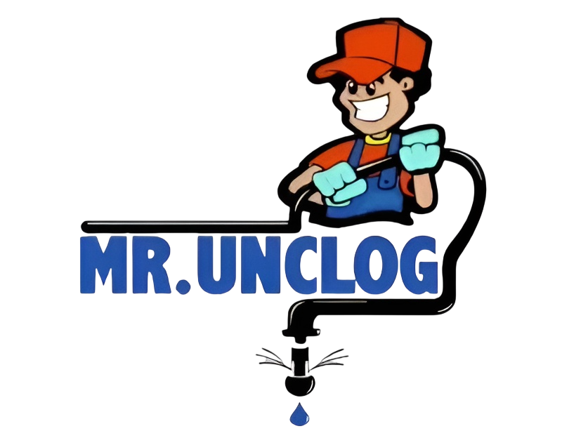
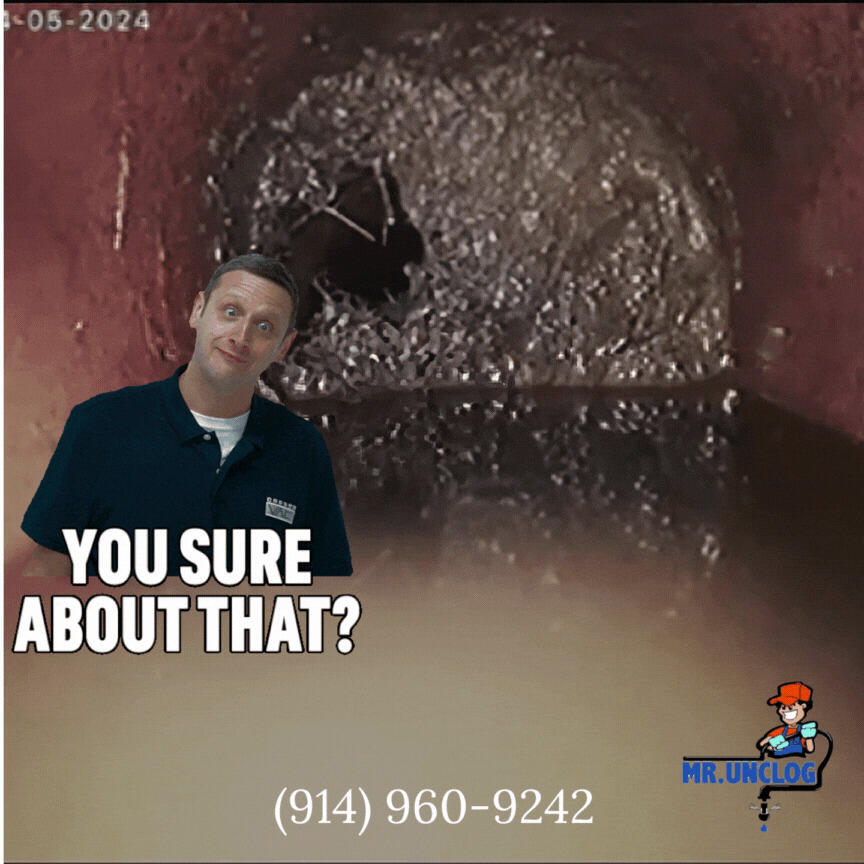
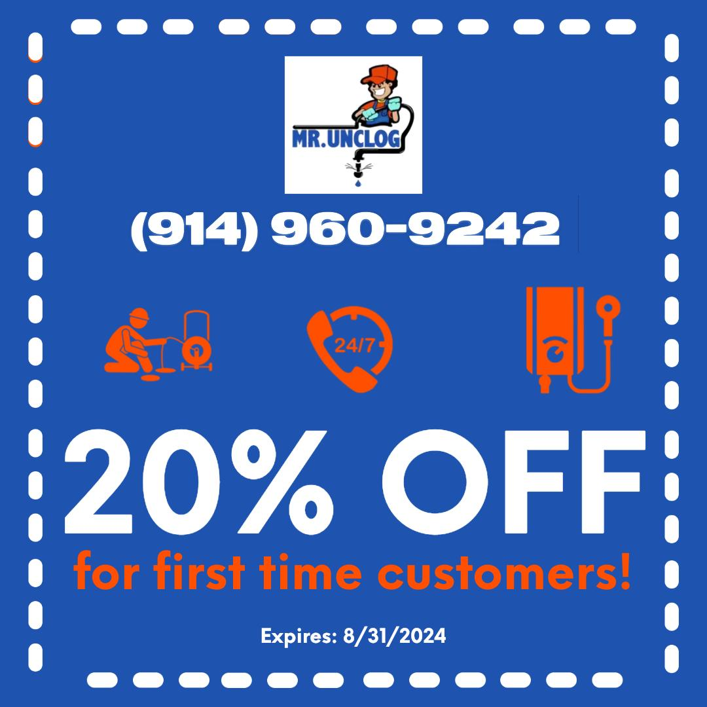

Plumbing content people actually share
The challenge: drains aren't glamorous. My work: make a local service memorable on social, keep the GoDaddy site climbing, and turn attention into jobs via email.
Work samples below. Traffic, lead, and retention figures are client-reported for the role (since Mar 2024); the measurement notes at the bottom list the exports that would verify them.
Post 1: Humor first, phone number always

Camera footage is gross — perfect for stopping thumbs. I paired it with meme copy, kept branding small but phone number big, and posted natively to Facebook/Instagram. Comments turned into DMs, DMs turned into calls. I also templated this so we could ship faster — part of the 20% turnaround win.
Post 2: Make the offer stupid-simple

Services need a reason to act now. This coupon ran as a pinned post, an email header, and a website banner so people saw it three times. Email drove +15% leads because the CTA wasn’t “learn more” — it was “claim 20% off before 8/31.”
Behind the posts + how I'll document it
Process so far: GoDaddy page updates + a proper content board to ship faster. Exports I'm pulling next (no fabricated screenshots):
- GoDaddy / GA: monthly sessions before vs after
- Email platform: sends, opens, CTR, leads
- Project board: cycle time before vs after (blur client names)
Tools
GoDaddy CMS • SEO / Content • Email marketing • Meta Business Suite • GA